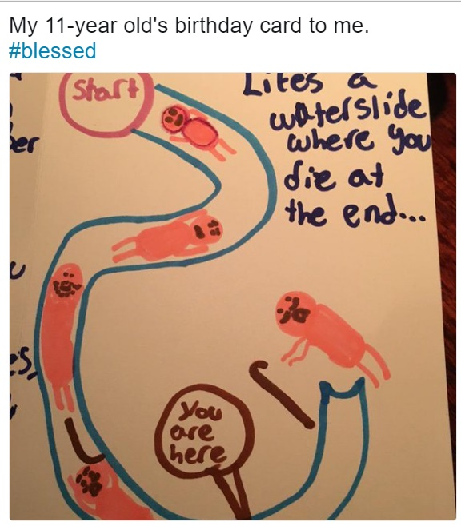
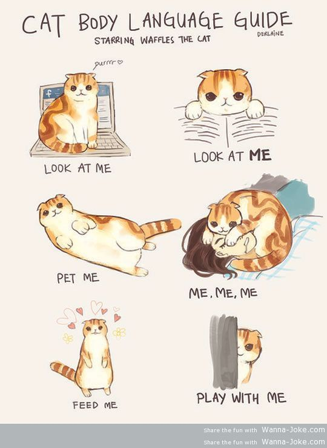

CAT: thoughts
Total Happiness

I was thinking. If we add up the total happiness of this world, versus all the grief, sadness, unhappiness, how would they come out to be?
I'm depressed. Noah is not doing his homework at school, and he is moving too much in class, as usual. It pissed me off …
Life without meaning

I don't know. All of a sudden while walking back from gym to office, I felt this moment of, emptiness. Really. It's a sensation I never had before. It's not a strong feeling, but distinctly there, that life is blank, meaningless.
I lost the touch of what it is for …
Burned out

I feel caught in a turmoil the last couple weeks that I had to deliver this BOM while I know nothing about, and had to deliver a schedule which many works have not even been defined, to determine a list of designs which no one else is looking at or …
2nd Child Policy

This has to be the most disturbing talk I have ever heard so far, and this makes me very angry.
The talk is about China's new policy to encourage having more than one child, and these people talked about possible ways to turn the tide of China's declining population. Sigh …
Hurricane

So there is a hurricane coming to NC. The curious thing, however, is
that there is an air of excitement in the air ← everybody is
rushing to grocery to stock up food, people calling each other just to
exchange that Costco has run out of water since yesterday.. actually
now …
Accelerated anonymity
It feels that everything is converging. Sometimes I feel this is the sign of aging, too, that by being in 40s and started to understand just about every topic and have an opinion of them, every book I read and every talk I listen to start to convey the same …
Too much trust
It has become a cliché that China nowadays are lacking trust. It has been talked about as if it would be the root cause of all disturbing social phenomenon as well as the one single cure of all social disease ← if only there were trust between people, between vendor and …
On Noah's 10th birthday

Hard to believe, the guy is 10 years old now. I can still feel the day, the day that he was coming to this world, and the day it was a hot summer day, and I was biking between hospital and home. He came at 1pm, the same time when …
Technology responsibility

This is a really a fascinating person. He is eloquent, which I have the impression that his mind runs million miles per second. You can feel it's churning at a speed so to compose the next line and the next thought, which now while writing, feels so different from Linus …
Social media

The recent downfall of Facebook stock and its data privacy fiasco have been spectacular, and saddening. People are talking about data privacy as if it is an evil just releases from Gene's bottle, and of course, when a giant like Facebook shows a crack, millions are worked up to bring …
A dream

I had a dream, as vivid as it can be, that I was walking next to you. You were wearing the black dress, the one you look so refined and elegant in. I reached out to your hand, but you retrieved it inside your sleeve, and only after a couple …
Not feeling well, today

But this screenshot from kiki brightens my day ~~
I miss 米粒儿和米答应. Sometimes I feel really sorry that I feel like I have walked out of their life. Maybe she feels that way, too. But then I know I didn't. I didn't mean to, and I did what I said I …
Waste of mind

Wow, this is quite unbelievable! I read a line:"A mind is a terrible thing to waste." (looking it up, there is an NPR!) yes I have always remembered this line, because it is so true — despite that I have been losing faith of human being in general, I do …
Development
This is a quite fascinating argument, and quite unexpected when I'm reading this book, Mosquitoes, Malaria and Man.
As for typing public health efforts to development, WHO takes its stand on popular but treacherous ground. One reason eradication failed, the argument goes, is that governments were not convinced it was …
China witness
I have seen this book on Reader's Corner's shelf for sometime, and never felt I should pick it up and read. The book didn't feel like a kind of book I would like to read, "Personal interviews!?" I thought ot myself, "that is a common cheap method to get some …
Generalization

I have been thinking, is generalization good, or bad, or inevitable? I kinda of wonder that looking at something, especially something new, in a generalized term, is actually inevitable. Watching Noah learning things since young, he has to generalize things in order to recognize anything — this is a dog, that …
System capability model
Ah, DCIM. Infrastructure needs to be managed, but then, what does it mean? Borrowing from wiki, a view can be:
- Asset Management
- Network connectivity Management
- Environment Management
- Energy Management
- Change Management and
- Capacity Management
- Computational Fluid Dynamics (CFD) Integration[17]
This type of view is based on an attribute of …
Lights
Walking out from a shadow after a morning gym session, my eyes were blinded, for a while, as if I was walking across a border between two worlds, a new life? a re-birth? It felt good, when the summer heat hit on your skin that has just emerged from a …
Moment of quietness

It's quiet here. Office is deserted due to the upcoming long weekend. It feels rather strange. Listening to the song makes me to think of you, and the days agains. Mr.Makato is still here. He is always here early in the morning, and leave late at night. Is he …
Must do, maybe

I just had a thought — many mid-age women claim that they feel the best of themselves in this age band because they are independent, self-sufficient, less anxious, not that they have fewer troubles in life, but they view them as a matter-of-fact, just deal with it when it comes.
On …
How many can one love

Train is an interesting, amazing thing. Never thought I will be sitting on a train (CalTrain) which brought me a feeling of riding train in China.
I haven't expected to see your messages, because I think it is the right thing to do that I should disappear from your life …
Technology and society

I have been thinking quite a bit about technology, and its relationship to society. I used to be a firm believer, and a practitioner, of technology. After all, it is what I do, and I actually enjoying writing code and drawing diagrams to analyze a problem at hand and to …
Sadness
Yao Han introduced me to this movie, at the time when we first met and were in love. I was 27, she was 19. I don't know how many times I have watched, listened to, and dreamed of, this movie. Each time it touches me deeper and deeper, makes me …
Finite anxiety

I was thinking. People get anxious on topic like bitcoin, why? Some talk says because the feeling of "loss" is greater than the feeling of "gain" even though the amount is the same. This has been proven in stock books. But then, things like bitcoin, or success, is NOT a …
Mid night

Since coming back from Spring Break trip, my body and mind have been really tired. Work is progressing fine. A lot of new things to learn, but overall are quite manageable. But work is just, work. I was sitting in this good looking, big kitchen 2 o'clock in the morning …
Integrity
From 4th grade class weekly message of 4/8/2018:
Positivity Project News:
Starting Monday, we will begin learning about integrity. This is doing the right thing when nobody is watching. People with integrity practice what they preach and maintain a consistent pattern of behavior aligned with their values. They …
Too little sympathy, too much generalization

Noah is a taking social intelligence course. A conversation gets me thinking, what is to measure a social intelligence? My observation of kids (and adults, too) is that we need sympathy — the feeling that your action will affect others in this or that way, and the uncomfort the others display …
Moving, and a big trip

The past weekend was the big moving day. Things actually went pretty well, except the morning pick up of U-Haul. What a terrible customer service they had! Well, it started with my fault really by forgetting to bring my driver license. Nonetheless, the only service was not helpful ← and it's …
A song
It's a morning that you are touched, by a song. Quite out of nowhere when I was just flipping through Youtube trying to find something to watch. Then there was this movie, I probably have watched it before. I can't remember when now. I don't even recall its tune. But …
Science disease
Another Chinese new year. But what came to my mind this morning was something quite peculiar, if not irrelevant to the scene — what is science, or being scientific? Noah is taking some science class on rock and mineral, and I have just written about euphemism. This word, science, has been …
To Nianyi
Hi,
Haven't been a while since I wrote you anything. I'm listening to this movie while working, and felt I have something to say to you.
I want to say I'm sorry, sorry for being such a ass recently, for not speaking to you much these days anymore, for checked …
euphemism

Sigh. Life is indeed full of puzzling person and phenomenon that annoys me and I found myself always wonder why they do that and what I have done to make them act that way (or regardless what I have done and do, they are just like that). Why?
The new …
Big D
This has been a long past due as I have been thinking about this for the last few days, and have attempted to write a letter a few times, but always not feeling the feel, and when the feel was there I was usually busy running around for things that …
Class

I have to say, I haven't read an entertaining book as Class for a long time. This book is just stimulating, fun, and sharp. It actually hurts. It describes sooo accurately of what I feel about many aspects/signals in life that I come off with a much clearer idea …
Society

I have been doing a lot of thinking recently, about human society. There are multiple themes in my life and in my thinkings that I find them interesting, disturbing, annoying, and saddening. The more books I'm reading about historical events and views, the more I question how a society, or …
Remembering China

This is a quite fascinating book. Actually I started to find myself always fascinated by early first-person account of China. I have this curiosity of what this country was like, and everytime I read a book like I always found myself keep thinking how similar peopel then to people now …
Reader digest life
Teacher: If you have 10 chocolate cakes and someone asks for 2, how many do you have left? Me: 10. Teacher: Okay, well what if someone forcibly takes two of the cakes, how many would you have left then? Me: 10, and a dead body.
This thought has been haunting …
Best yoda lines
Noah wrote a sheet he titled best yoda line from the clone
war. It's both philisophical, sophisticated, and cute. He has also
said quite a few things recently that shocked me.
Episode 1: taking a trip
Me: do you want to go on a trip with me? Noah: No (firmly …
A minor upset

I think, well, actually not that I think, I feel, I feel it with me, that I have grown very much impatient with Noah's mom now. This is really sad. I think there is something up to her life recently, too — she was not being patient with Noah, actually I …
Age and maturity

I admire youth. It is a wonderful treasure to have since there is nothing you did to have it, and nothing you can do to retain it. You have it when you have it, then it's gone. But youth is also an awful curse since you are cast into a …
Half the world

Indeed a fascinating book, Where half the world is waking up by [Clarence Poe], a person born in North Carolina writing about China, Japan, Korea and India in the year of 1911. What a view he had!?
Certainly I got to learn about what these countries were like — more backwards …
Mind

Got a book and it is truly disturbing, Rape of the Mind. So the
mind manipulation has been developed to the point that is highly
refined, highly scientific (you know I always have reserve about
this particular word this days), highly systematic, and highly
predictable. And this is the really …
Logic

It amazes me, really, that how many people are conflicting themselves in term of logic in their arguments. Or I should say, everyone, including myself, are constantly in a state of contradicting of ourselves when it comes to explain an opinion or in a discussion to win a debate. How …
Hurt feelings

This is a tough one, really, cause I have been puzzled by this topic for the last five years, and am continuing being puzzled by it without a resolution. I don't know how to resolve this. But it is definitely an issue of me that I need to understand, to …
Love, life

I'm in the middle of this mid-life crisis, I guess, which prompted me to think a lot about why I am feeling this, whether this is happening for a reason, that it is just unique to me, or to everyone in a way, just different content? If it's the latter …
A vain debate pattern

A mature technology

This notion of 技术已经很成熟 (it is a mature technology? a well known technology? huh? I don't even know how to translate this line.) bothers me a LOT! What do you mean by that? There are loads questions to be clarified, don't you think!?
- that the technology has already been developed …
History

Reading The rape of the Nile, quite a fascinating book. It's rather surprising how recent these events were — we are talking about the mid-19th century, what, about 150 years ago? In prospective, the history of Egypt and its glorious monuments have been around for much longer than that.
reality of …
Slow down

Have you had this experience, that something you are familiar with, suddenly slowed down, which made you feel that everything was in a slow motion?
I know, it sounds pretty strange, and it is indeed strange. On the way to work this morning I was listening to my all time …
Anonymous
A poor-man's version my loved La La Land in which the perpetual theme of love, ambition, losing integrity in the face and name of opportunity. Why can't reality lose, once?